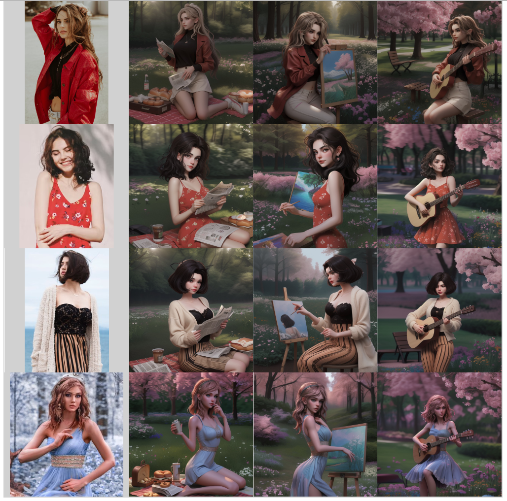
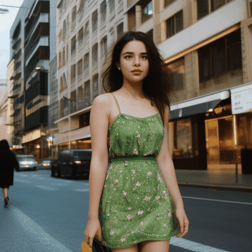
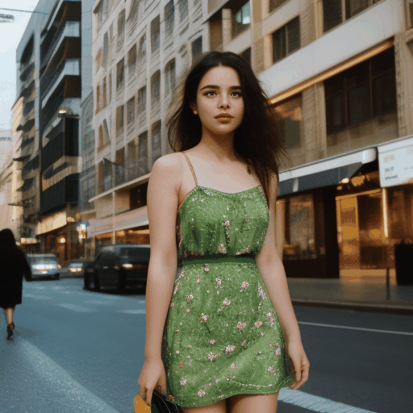
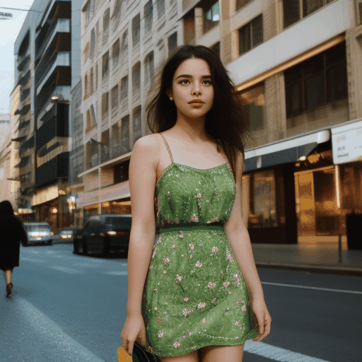

Nanyang Technological University, Tencent
*Equal contribution, † Project lead, ◊ Corresponding Author You can contact Rui Wang for further details.
Abstract
Recent advancements in image generation have enabled the creation of high-quality images from text conditions.
However, when facing multi-modal conditions, such as text combined with reference appearances, existing methods
struggle to balance multiple conditions effectively, typically showing a preference for one modality over others.
To address this challenge, we introduce EMMA, a novel image generation model accepting multi-modal prompts built
upon the state-of-the-art text-to-image (T2I) diffusion model, ELLA. EMMA seamlessly incorporates additional
modalities alongside text to guide image generation through an innovative Multi-modal Feature Connector design,
which effectively integrates textual and supplementary modal information using a special attention mechanism. By
freezing all parameters in the original T2I diffusion model and only adjusting some additional layers, we reveal
an interesting finding that the pre-trained T2I diffusion model can secretly accept multi-modal prompts. This
interesting property facilitates easy adaptation to different existing frameworks, making EMMA a flexible and
effective tool for producing personalized and context-aware images and even videos. Additionally, we introduce a
strategy to assemble learned EMMA modules to produce images conditioned on multiple modalities simultaneously,
eliminating the need for additional training with mixed multi-modal prompts. Extensive experiments demonstrate the
effectiveness of EMMA in maintaining high fidelity and detail in generated images, showcasing its potential as a
robust solution for advanced multi-modal conditional image generation tasks.
Approach
Our proposed EMMA is built upon the state-of-the-art text-conditioned
diffusion model ELLA, which trains a transformer-like module, named Perceiver Resampler, to
connect text embeddings from pre-trained text encoders and pre-trained diffusion models for better text-guided
image generation.
ELLA has strong text-to-image generation ability, and our proposed EMMA could merge information from other
modalities into text features for
guidance.
In detail, to control the image generation process by modalities beyond text, EMMA incorporates our proposed
Assemblable Gated Perceiver Resampler (AGPR), which leverages cross-attention to inject information from
additional modalities beyond texts. In our design, the AGPR blocks are strategically interleaved with the
blocks
of the Perceiver Resampler of ELLA. This arrangement ensures an effective integration of multi-modal
information.
During training, we freeze the raw modules of ELLA to maintain the control ability of text conditions.
Notably, EMMA is inherently designed to handle multi-modal prompts as conditions, allowing for the
straightforward combination of different multi-modal configurations. This is achieved by the gate mechanism in
our
AGPR, which could control the way of injecting information from other modalities into the textual features.
This
advantage enables diverse and complex inputs to be synthesized into a unified generation framework without the
need for additional training.
Image generation with different conditions
The generated images of EMMA under various conditions, including text-only, text + X, and text + composite
conditions, showcase different individuals behaving differently in various scenes. Meanwhile, the details of the
characters are preserved, ensuring the final results adhere to the text instructions.
Image Generation with text + portrait conditions
Here, we present additional images generated by EMMA under text + portrait conditions. Various portraits, each
with unique features, adhere to the same prompts, demonstrating our model's excellent control over text
conditioning and its ability to preserve individual identities.
Image Generation with text + portrait conditions using ToonYou
Given a text prompt and a portrait, our proposed EMMA can integrate with various diffusion models to generate
images in different styles. Here are the images created using EMMA in conjunction with ToonYou.

Image Generation with text + portrait conditions using AnimateDiff
Given a portrait and a prompt, our proposed EMMA, combined with the AnimateDiff diffusion model, can generate
images that preserve portrait details while adhering to text instructions.

Story Telling
Images generated by our EMMA with portrait conditions. Two sets of images are generated for two separate stories.
The first set of images is about a mailing woman chased by a dog. The second set of images is about a man finding
treasures.


 
